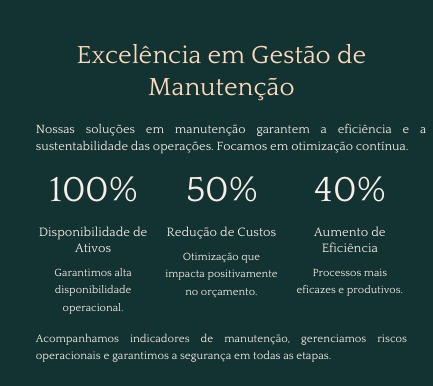

Consultoria Técnica
Oferecemos consultoria especializada em engenharia elétrica e geração de energia, apoiando empresas, cooperativas e produtores rurais na tomada de decisões estratégicas.
Nossa equipe analisa projetos, identifica riscos e propõe soluções técnicas que aumentam a eficiência e reduzem custos.
Atuamos desde o planejamento inicial até a execução, garantindo conformidade com normas técnicas e regulatórias. Com experiência acumulada desde 2012, ajudamos nossos clientes a implementar sistemas confiáveis e sustentáveis.
💬 Precisa de apoio técnico especializado? Conte com a gente!
Nossas Soluções em Consultoria
Estudos de Viabilidade
Análise técnica e financeira para novos projetos de energia.
Planejamento Estratégico
Definição de soluções sob medida para cada operação.
Gestão de Projetos
Acompanhamento completo desde a concepção até a execução.
Normas e Regulamentações
Garantia de conformidade com padrões técnicos e legais.
Redução de Custos
Soluções que aumentam eficiência e diminuem gastos operacionais.
Suporte Técnico
Equipe especializada para orientar e apoiar decisões críticas.
Como Atuamos
- Análise detalhada de projetos e sistemas
- Identificação de riscos e oportunidades
- Proposição de soluções técnicas eficientes
- Planejamento e acompanhamento de execução
- Suporte contínuo e consultoria personalizada